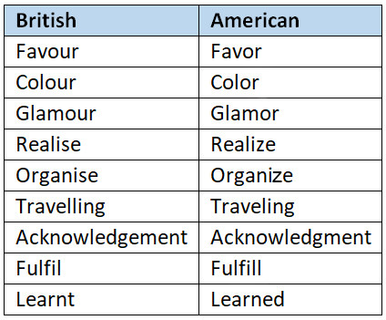

Planning to submit your work to a publisher?
Wait!
Read this first…
At the onset of a new era in publishing when more and more voices are being heard, when new hidden gems and stories are unearthed every day, which may have never seen the light of the day, I’m sure you have a story to tell too, an experience to share, an urge to paint the sky with your ink. Yes, I’m talking about self-publishing, which has come a long way in a very short while but has an even longer journey to make.
Now, although your story may be easily accepted in this new arena of publishing, you should know there’s a lot that goes behind the scenes.The self-publishing houses work tirelessly to bring out your story as close as the dream you have seen. They are doing a lot in terms of getting your story out in the best possible way and innovating ways to spread the word.
But… I’m not here to discuss the ‘behind the scenes’. Let’s get the real picture rolling… Your story!
If you’ve managed to finish your manuscript, congratulations! You’re where most just dream to be,you’re off the ground;you managed to take off!
But, if you’re planning to submit your work to a publisher (as soon as you finish it), wait! Pause for a moment and remember, the voyage does not end here.You’re yet to reach the destination, you’re yet to land.And to make that landing a smooth one, this little write-up will assist you.
Until the time you submit your content, you’re the pilot and the reigns are in your hands. Before you handover and go into the auto-pilot mode, ensure that you’ve set all parameters appropriately for the auto-pilot (publisher) to give you the best of the rest of the journey.
Here is what you should do prior to making a submission – Re-read!
Re-read as if you’re reading a story written by someone else, as a ‘reader’, not as the one who owns it. And while you do that, ensure to strike-off the below points:
Consistency:
➢ Is your story consistent? – It creates a really bad impression if your story doesn’t hold up. So to say, the events and proceedings must maintain integrity throughout the book. Suppose a boy proposes to a girl at the beginning of the story; in the second half, the boy remembers how the girl proposed to him! [Really??] Don’t do that… Check twice, check thrice, but don’t let your storyline fall apart like this.
➢ Are the names consistent?– Another thing that gives a bad impression is if the names (or the spellings of those names) are inconsistent through the story. A name turning from Anna to Ana or one turning from Neil to Neel or Niel. No, that’s not okay. Take your story seriously, correct any such mistake you see.
➢ Point of view (First, Second or Third person)– Ensure that the ‘point of view’ of the story flows properly. If you’re switching between these, make certain you are clearly putting it down for the reader to comprehend the transition; don’t assume the reader ‘just knows’.
➢ Facts and figures– If you’re stating some facts and figures, double-check them. The above two inconsistencies are still more likely to be caught by the editors/publishers, but ‘this’ may not fall under their obligation. Take the pain to validate all such points. You ought to cover your ground and have your research come clean.
➢ Quotes– If you’re quoting someone, chances are, it’s all over the internet. So, for your own sake, please get that right. Don’t let such a slip happen. If I’m a voracious reader, I may have actually come across that quote already, and when I read that ‘misquoted’ in your book, you lose credibility.
Language:
Try to check as many of the below points as you can. The more you do, the better the end result turns up. Of course, the editors will be polishing your work, but the more you refine your text, the better the enhancements are bound to come from the other side. Remember, the best results come out when it’s a team effort.
➢ Language Version– If you’re writing in English, the general trend is to follow ‘British English’ or ‘American English’ (most other ‘English’ versions closely follow one of these). Chances are, you’ll be typing your script in an MS-Word document. If so, check the bottom bar of your MS-Word screen (left-hand side) – that’s what your document is following. To change (or if you can’t see the language there), go to the ‘Review’ tab (on the top) and then the ‘Language’ tab. You can select and set the language here. Once you’ve chosen the language, try to follow it through the document. The publishers really appreciate if you mention which particular language version you wish to follow, rather than having them figure it out.
You can quickly check your preferred language by the spellings you prefer to use:

➢ Tense– Watch the tense. It’s really annoying, as a reader, to read different tenses in the same sentence or in the same paragraph. Try to keep the tone of your writing consistent. Example - Avoid this: Tom ‘was’ coming to pick his friend. He ‘is’ 20 miles away.
➢ Word usage– Please try and use a vocabulary you are comfortable with. Don’t complicate things unnecessarily by trying to replace your own word with a synonym you find online. Chances are, it would be an inappropriate usage of the word. This not only distorts the meaning but also gives a bad impression as it reveals you are not comfortable with the language or the level of vocabulary you’ve used. You’re here to tell a story, not to play a grammar quiz.
➢ Punctuation– Remember to follow the basic punctuation rules. If you’re not sure, go that extra mile and read online;you’ll definitely improve your text following the rules.
➢ Word repetition– As you re-read, you’ll find some specific words which you have over-used, time and again. Try to avoid that. Example: Some authors tend to write ‘just’ quite a lot. “I was just going for a bath when the phone rang. I just picked it up, but I slipped.” This could be written as – “I was going to the bath when the phone rang. As soon as I picked it up, I slipped.”
➢ Sentence formation– As you re-read your work, try and see if there are certain sentences which don’t make any sense or are repeated a lot of times. When you get into the flow of writing, you may have said the same thing again and again, in different words. Try and cut/correct such sentences. ‘Concise text’ leaves a better mark on the reader, whereasrepetition makes it boring.
➢ Dialogue Writing– Last but not the least… Dialogues! Remember to punctuate your dialogues properly. There are tons of articles online, on dialogue-writing.Follow any standard, but again - be consistent with what you follow. Single quotes, double quotes, commas, full-stops, question marks, etc.
If you do not follow some of the above-mentioned points, don’t worry, your submission is not going to crash. Most of it will be taken care of by the editors. Nevertheless, if you want that smooth landing, that lasting impression, and if you want the publishers and readers to love your work, I may just have spilled the right beans, above!
So go on, re-read your story today!
From the Editor's desk
Amit Sareen